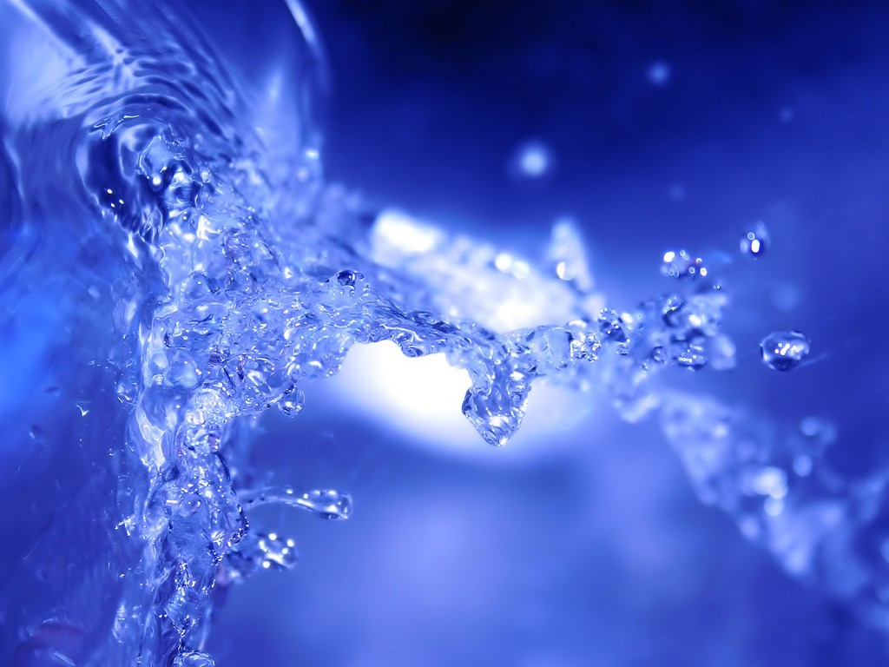

4 Formas de Ferver Água - wikiHow
 MENSAGENS ENTRAR
Autenticar-se
Facebook Google Conta do wikiHow Não possui conta? Criar conta EXPLORAR Portal da Comunidade Página aleatória Quem Somos Categorias CONTRIBUA Outras ideias... Início Aleatório Explore Categorias Sobre o wikiHow Login / Cadastro Políticas Ao usar nosso site, você concorda com nossa política de cookies . Aceitar ✖ Categorias Culinária e Gastronomia Preparação de Alimentos Culinária BásicaComo Ferver Água
Coescrito por 59 colaboradoresComunidade de editores, pesquisadores e especialistas
Referências
CONTEÚDO VÍDEO X O wikiHow é uma "wiki"; ou seja, muitos de nossos artigos são escritos em parceria com várias pessoas. Para criar este artigo, 59 pessoas, algumas anônimas, editaram e melhoraram o texto desde sua criação.
Há 24 referências neste artigo. Você pode encontrá-las ao final da página.
Este artigo foi visualizado 77 832 vezes.
Ferver água é uma tarefa tão comum que pode ajudar em qualquer situação. Está fazendo o jantar? Acrescente um ovo pochê ao prato, ou descubra se o sal realça mesmo o sabor dos alimentos. Vai escalar uma montanha? Descubra o motivo de sua comida demorar tanto para cozinhar e como transformar a água daquele córrego em água potável. Continue lendo para descobrir estas e outras dicas.
Passos
Método 1 de 4: Ferver a água para cozinhar
{"smallUrl":"https:\/\/www.wikihow.com\/images_en\/thumb\/2\/25\/Boil-Water-Step-1-Version-4.jpg\/v4-460px-Boil-Water-Step-1-Version-4.jpg","bigUrl":"https:\/\/www.wikihow.com\/images\/thumb\/2\/25\/Boil-Water-Step-1-Version-4.jpg\/v4-728px-Boil-Water-Step-1-Version-4.jpg","smallWidth":460,"smallHeight":259,"bigWidth":"728","bigHeight":"410","licensing":" div class=\"mw-parser-output\" \/div "} 1 Escolha uma panela com tampa. A tampa prenderá o calor dentro da panela, fazendo com que a água ferva mais rápido. Uma panela grande levará mais tempo para ferver, mas o formato não faz muita diferença. [1] X Fonte de pesquisa 2 Adicione água fria. Água quente da torneira pode conter chumbo, absorvido dos encanamentos, o que não é recomendado para cozinhar ou consumir. [2] X Fonte de pesquisa Comece com a água fria. Não encha a panela inteira, pois pode espirrar água para fora quando estiver borbulhando; além disso, você precisará de espaço para a comida também. Não acredite no mito de que água fria ferve ais rápido que água quente. [3] X Fonte de pesquisa É a opção mais segura, mas demorará um pouquinho mais. 3 Adicione sal a gosto (opcional). O sal não impacta a temperatura de fervura tanto assim, mesmo que você ponha tanto que pareça água do mar. [4] X Fonte de pesquisa [5] X Fonte de pesquisa u On Food and Cooking /u by Harold McGee, ISBN 0684800012 Ponha apenas para dar gosto à comida - especialmente massa, que absorverá o sal. [6] X Fonte de pesquisa Talvez você veja algumas bolhas se formarem quando jogar o sal - é divertido de olhar, mas não afeta a temperatura em nada. [7] X Fonte de pesquisa Adicione sal à agua do ovo cozido. Assim, se a casca rachar, o sal solidificará o ovo, selando a abertura. [8] X Fonte de pesquisa 4 Ponha a panela em fogo alto. Coloque a panela no fogão e acenda-o em fogo alto. Tampe para a água ferver mais rápido. 5 Aprenda os estágios da fervura. A maioria das receitas pede água em ponto de ebulição ou fervente. Aprenda a reconhecer essas etapas, além de algumas opções menos conhecidas, que ajudarão a atingir a temperatura ideal: [9] X Fonte de pesquisa Temperatura branda: Surgem algumas bolhas no fundo da panela, mas elas não sobem e a superfície tremula levemente; isso acontece entre 60ºC e 75ºC, temperatura ideal para fazer ovo pochê , peras pochê , ou peixe pochê . Sub-fervura: algumas linhas de bolhas surgem, mas a maior parte da água ainda está quieta. A temperatura é entre 75ºC e 90ºC, ideal para ensopado ou assar carne . Ponto de ebulição: Bolhas pequenas e médias começam a subir e estourar na superfície de toda a água. Com a temperatura entre 90ºC e 100ºC, é ideal para cozinhar vegetais ou derreter chocolate , a gosto do freguês. Fervura: há vapor e movimentação constantes na água, mesmo que você mexa com a colher. Esse é o ponto mais alto da fervura: 100ºC. Cozinhe massa a essa temperatura. 6 Adicione o alimento. Essa é a hora de colocar a comida na água, se esse for o objetivo. Alimentos frios reduzirão o calor da água e podem até retroceder um estágio, mas não tem problema. Deixe o fogão em temperatura alta até que a água volte a esquentar. Não ponha o alimento na água antes de esquentá-la a não ser que a receita diga especificamente o contrário. Isso dificulta a percepção do tempo de cozimento e pode causar efeitos inesperados; por exemplo, a carne fica mais dura e menos saborosa se é exposta à água fria em qualquer etapa de seu cozimento. [10] X Fonte de pesquisa 7 Abaixe o fogo. O fogo alto é útil quando se quer ferver a água logo. Assim que conseguir, reduza o calor para médio (para a fervura) ou baixo (para sub-fervura). Assim que a água estiver fervendo pra valer, usar fogo alto só fará com que ela evapore mais rápido. Verifique a panela de vez em quando nos primeiros minutos, para ter certeza de que a água está na temperatura desejada. Quando fizer sopa ou outros alimentos de cozimento lento, deixe a panela entreaberta. Fechá-la completamente elevará a temperatura além do que a receita pede. PublicidadeMétodo 2 de 4: Purificação de Água Potável
1 Ferva a água para matar bactérias e outros patógenos. Qualquer micro-organismo prejudicial encontrado na água morrerá quando ela ferver. [11] X Fonte de pesquisa A fervura não removerá contaminações químicas. [12] X Fonte de pesquisa Se a água estiver turva, filtre-a primeiro para remover a sujeira. 2 Ferva a água. É o calor que mata os micro-organismos, não a ação de ferver; no entanto, este é o meio mais seguro para saber a temperatura da água sem um termômetro. Espere até que saia vapor. A essa altura, os organismos perigosos já terão morrido. [13] X Fonte de pesquisa [14] X Fonte Confiável World Health Organization Ir à fonte 3 Deixe a água ferver por 1 a 3 minutos (opcional). Uma dose extra de cuidado é deixar a água fervendo por 1 minuto (conte até 60 devagar). Caso esteja a mais de 2,000 m acima do nível do mar, deixe ferver por 3 minutos (conte até 180 devagar). [15] X Fonte Confiável Centers for Disease Control and Prevention Ir à fonte A água ferve a temperaturas mais baixas em grandes altitudes. Por ser levemente mais fria, demora mais para matar os micro-organismos. 4 Deixe-a esfriar e guarde em vasilhames com tampa. Mesmo depois de esfriar, a água fervida é segura para ser consumida. Guarde-a em garrafas fechadas e limpas. [16] X Fonte de pesquisa Ela terá um gosto mais pesado se comparada à água comum porque uma parte do ar contido nela evaporou. Para melhorar o sabor, passe-a de um copo limpo para o outro. [17] X Fonte de pesquisa Assim ela reterá ar quando estiver em movimento. 5 Leve um aquecedor de água portátil quando estiver viajando. Caso tenha acesso à eletricidade, leve um aquecedor de água, ou um fogareiro de acampamento, baterias e o combustível necessário. 6 Em último caso, deixe vasilhas ao sol. Caso não exista meio de ferver a água, ponha-a em recipientes transparentes de plástico. Deixe-os ao sol por seis horas. Não é tão seguro quanto ferver, mas matará algumas bactérias poderosas. [18] X Fonte de pesquisa PublicidadeMétodo 3 de 4: Ferver a água em microondas
1 Ponha a água em um recipiente que possa ser utilizado em microondas. Caso você não encontre um que diga ser explicitamente seguro para isso, prefira utensílios de vidro ou cerâmica que não tenham desenhos metálicos. Para verificar a segurança, ponha o recipiente vazio dentro do aparelho, ao lado de um copo com água. Ligue por 1 minuto. Se o prato esquentar, não é seguro. [19] X Fonte de pesquisa Para ter ainda mais segurança, use um recipiente que tenha um arranhão ou rachadura na superfície. Isso ajudará a água a borbulhar, reduzindo o risco de uma explosão causada por superaquecimento (que é altamente improvável). [20] X Fonte de pesquisa 2 Ponha um objeto (que possa ser usado em microondas) dentro da água. Isso também ajuda a água a borbulhar. Tente uma colher de madeira, um hashi ou palito de sorvete. Até uma colher de sal ou açúcar pode ser (se você não se importar com a mudança de sabor). [21] X Fonte Confiável US Food and Drug Administration Ir à fonte Evite usar um objeto de plástico, que pode ser muito liso para as bolhas se formarem. 3 Ponha a água no microondas. Na maioria dos aparelhos, as bordas do prato giratório esquentam mais rápido que o centro. [22] X Fonte de pesquisa 4 Aqueça em intervalos curtos, mexendo sempre. Para ainda mais segurança, olhe as recomendações de temperatura para ferver água no manual do seu microondas. Caso não o tenha, tente aquecer a água em intervalos de 1 minuto; após cada intervalo, mexa a água cuidadosamente, depois tire-a do aparelho para testar a temperatura. A água estará pronta quando tiver vapor e estiver quente demais ao toque. Se a água ainda estiver muito fria nos primeiros minutos, aumente o tempo para 1,5 minuto ou 2 minutos. O tempo total depende da potência de seu aparelho e da quantidade de água a ser fervida. Não espere uma fervura contínua no microondas. A água atingirá temperatura de ebulição, mas será menos óbvio. PublicidadeMétodo 4 de 4: Ferver água em altitudes elevadas
1 Entenda os efeitos. À medida em que se sobe a partir do nível do mar, o ar fica rarefeito. Com cada vez menos moléculas de ar para pressionar a água, cada molécula de água tem menos dificuldade para se desprender das outras e ir para o ar. Em outras palavras, menos calor é necessário para fervê-la. E, apesar de ferver rapidamente, a baixa temperatura dificulta o processo de cozimento. Não se preocupe com isso, a não ser que esteja a 610 m de altitude ou mais. 2 Comece com mais água. Já que líquidos evaporam mais rápido em altitudes elevadas, você deverá adicionar água para compensar; se for para fazer comida então, mais água ainda. O alimento requer mais tempo para cozinhar, portanto mais água do que você usa normalmente. 3 Ferva os alimentos por mais tempo. Para compensar a baixa temperatura, você pode cozinhar os alimentos por mais tempo. Eis uma regra básica sobre quanto tempo adicionar: [23] X Fonte de pesquisa Se a receita levaria menos de 20 minutos para ferver no nível do mar, adicione 1 minuto de fervura para cada 305 m acima do nível do mar. Se a receita levaria mais de 20 minutos para ferver no nível do mar, adicione 2 minutos a cada 305 m acima do nível do mar. 4 Use uma panela de pressão . Em altitudes particularmente elevadas, ferver a água pode demorar demais. Ferva a água em uma panela de pressão; com a panela vedada, a água fica presa sob a tampa e aumenta a pressão, permitindo que o líquido possa atingir temperaturas maiores. Com essa panela, cozinhe como se estivesse no nível do mar. PublicidadeDicas
Caso queira ferver coisas como molho, diminua o fogo para não queimar o fundo da panela. Tradicionalmente, a massa é adicionada a uma panela bem grande de água fervente, entre 8 e 12,5 litros por quilo. Recentemente, alguns chefs começaram a usar panelas menores e a cozinhar a massa em água fria. [24] X Fonte de pesquisa [25] X Fonte de pesquisa Este segundo método é muito mais rápido.Publicidade
Avisos
Vapor queima e escalda mais do que a água fervente por conter mais energia de calor. A água fervente e o vapor que ela emana são quentes o suficiente para queimar a pele. Use um protetor de mãos se precisar e manuseie com cuidado. Água destilada superaquece com mais facilidade no microondas, já que não contém impurezas que ajudam a água a borbulhar. Ainda assim é incomum, mas é melhor escolher a água de torneira. PublicidadeWikiHows Relacionados
Como
Fazer Ovo CozidoComo
Cozinhar em Fogo BrandoComo
Verificar se o Fermento Está FrescoComo
Ferver Água no MicroondasComo
Engrossar um Caldo de CarneComo
Deixar Brócolis Cozido VerdinhoComo
Cozinhar LentilhasComo
Cozinhar Brócolis CongeladoComo
Esquentar FrangoComo
Derreter QueijoComo
Deixar Feijão Preto de MolhoComo
Substituir a Farinha Branca pela Farinha de Trigo IntegralComo
Fazer Fécula de BatataComo
Cozinhar Trigo Sarraceno PublicidadeVídeo . Ao usar este serviço, algumas informações podem ser compartilhadas com o YouTube.
Referências
↑ http://whatscookingamerica.net/boilpoint.htm ↑ http://water.epa.gov/drink/info/lead/lead1.cfm ↑ http://www.scientificamerican.com/article/is-it-true-that-hot-water/ ↑ http://kitchenscience.sci-toys.com/boiling_freezing_pressure ↑ On Food and Cooking by Harold McGee, ISBN 0684800012 ↑ http://www.finecooking.com/articles/cooking-pasta-properly.aspx?pg=0 ↑ http://www.seriouseats.com/2010/08/how-to-boil-water-faster-simmer-temperatures.html ↑ https://www.exploratorium.edu/cooking/eggs/explore-text.html ↑ http://www.seriouseats.com/2010/08/how-to-boil-water-faster-simmer-temperatures.html Mais referências ↑ http://www.gemmasliving.com/cooking-tip-boiling-water-and-meat/ ↑ https://www.health.ny.gov/environmental/water/drinking/boilwater/response_information_public_health_professional.htm ↑ http://www.doh.wa.gov/Emergencies/EmergencyPreparednessandResponse/Factsheets/WaterPurification ↑ http://cid.oxfordjournals.org/content/34/3/355.full ↑ http://www.who.int/water_sanitation_health/dwq/Boiling_water_01_15.pdf ↑ http://www.cdc.gov/healthywater/drinking/travel/backcountry_water_treatment.html ↑ http://water.epa.gov/drink/emerprep/emergencydisinfection.cfm ↑ http://water.epa.gov/drink/emerprep/emergencydisinfection.cfm ↑ http://onlinelibrary.wiley.com/doi/10.1046/j.1365-2672.1998.00455.x/epdf ↑ http://www.overstock.com/guides/how-to-tell-if-something-is-microwave-safe ↑ http://www.snopes.com/science/microwave.asp ↑ http://www.fda.gov/Radiation-EmittingProducts/RadiationEmittingProductsandProcedures/HomeBusinessandEntertainment/ucm142506.htm ↑ https://www.youtube.com/watch?v=cJipa07DoHs ↑ http://www.wildbackpacker.com/backpacking-food/articles/high-altitude-cooking/ ↑ http://altonbrown.com/cold-water-method-pasta-recipe/ ↑ http://www.nytimes.com/2009/02/25/dining/25curi.html ?Sobre este guia wikiHow
O wikiHow é uma "wiki"; ou seja, muitos de nossos artigos são escritos em parceria com várias pessoas. Para criar este artigo, 59 pessoas, algumas anônimas, editaram e melhoraram o texto desde sua criação. Este artigo foi visualizado 77 832 vezes. Categorias: Culinária Básica Resumo do Artigo XPara ferver água, encha uma panela e coloque-a no fogão em fogo alto. Aguarde até que a superfície comece a produzir vapor e borbulhar constantemente para depois adicionar a comida. Se quiser purificar a água para beber, aqueça-a até começar a borbulhar constantemente e deixe-a fervendo por alguns minutos antes de tirar do fogo para esfriar.
Em outras línguas Français: faire bouillir de l'eau Italiano: Bollire l'Acqua Español: hervir agua Deutsch: Wasser kochen 中文: 烧水 Русский: вскипятить воду Bahasa Indonesia: Mendidihkan Air Nederlands: Water koken Tiếng Việt: Đun sôi nước العربية: غلي الماء 日本語: 水を煮立たせる हिन्दी: पानी उबालें Imprimir Esta página foi acessada 77 832 vezes.Este artigo foi útil?
Sim Não Publicidade Os Cookies tornam o wikiHow melhor. Ao continuar usando nosso site, você concorda com nossa política de cookies .Artigos Relacionados
Como
Fazer Ovo CozidoComo
Cozinhar em Fogo BrandoComo
Verificar se o Fermento Está FrescoComo
Ferver Água no MicroondasSiga-nos
Categorias Culinária e Gastronomia Preparação de Alimentos Culinária Básica Home Sobre o wikiHow Especialistas Entre em Contato Mapa do site Termos de Uso (em Inglês) Do Not Sell My Info Not Selling Info
Siga-nos
770